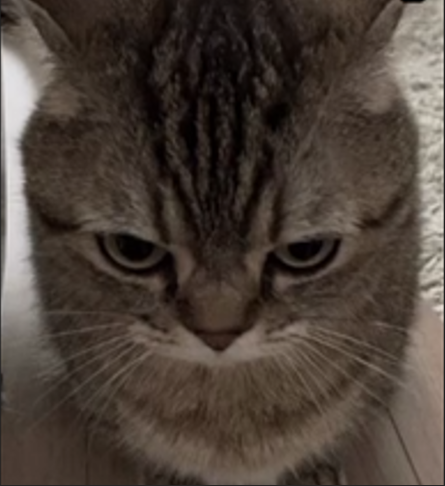
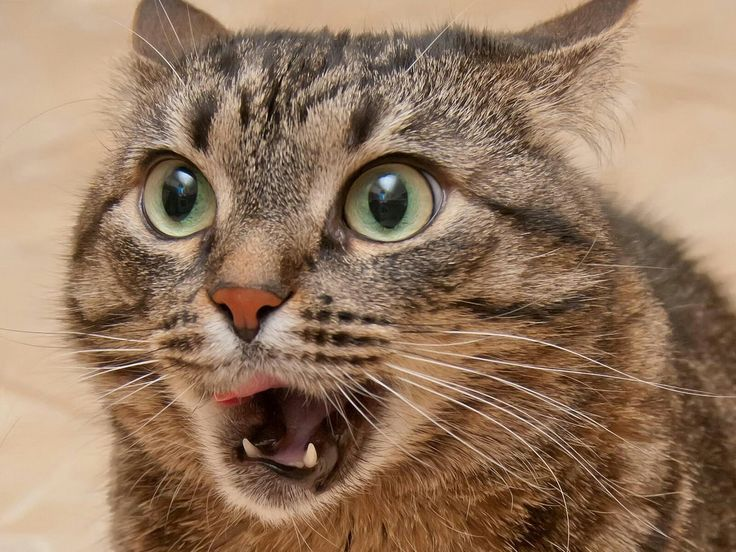

Кот
Одомашнивание кошки
Топ популярных пород кошек
Психология кошки
Сравнение кошки с другими домашными питомцами
Автор
В русском языке слово «кошка» означает либо представителя биологического вида Felis catus вообще независимо от пола, либо самку этого вида. Самца называют кот, а детёныша кошки — котёнок (мн. ч. котята).

Кошка (лат. Felis catus) — домашнее животное, одно из наиболее популярных (наряду с собакой) «животных-компаньонов». - Википедия.
В настоящее время в мире насчитывается около 600 млн домашних кошек, выведено около 256 пород, от длинношерстных (персидская кошка) до лишённых шерсти (сфинксы), признанных и зарегистрированных различными фелинологическими организациями. Самая первая порода кошек появилась в Египте. Кошки распространены по всему миру.
Одомашнивание кошки
Одомашнивание кошки произошло примерно 9500 лет назад на Ближнем Востоке в районе Плодородного полумесяца, где зародились и развивались древнейшие человеческие цивилизации. Одомашнивание кошки началось при переходе человека к оседлому образу жизни, с началом развития земледелия, когда появились излишки пищи и возникла необходимость их сохранения и защиты от грызунов.
Топ популярных пород кошек
- Шотландская вислоухая
- Британская короткошерстная
- Мейн-кун
- Канадский сфинкс
- Бенгальская кошка
Подробнее с данными можно ознакомиться по ссылке
Психология кошки
- Особенности сна. Кошки сохраняют энергию посредством сна в большей мере, чем большинство животных. Длительность сна в сутки составляет 12—16 часов. Некоторые кошки спят по 20 часов в сутки. В процессе сна у кошек периодически наступает фаза быстрого сна, сопровождающаяся быстрыми движениями глаз и сокращением мускулов, это свидетельствует о том, что кошки имеют способность видеть сны.
- Общение. Домашние кошки используют много разнообразных звуковых сигналов для общения, включая несколько различных видов мяуканья, мурлыканье, шипение, завывание, свист, ворчание и другие. В зависимости от значения интонация мяуканья изменяется. Кошки обычно мяукают для того, чтобы привлечь внимание человека. Кошки способны придавать своему голосу около сотни различных интонаций (собаки, к примеру, только около десяти). Вместе с тем для общения между собой кошки редко используют мяуканье, зато общаются через систему знаков, которая имеет обширный диапазон звуков, телодвижений, взглядов. Котята при рождении издают тонкий писк, причём известно, что обычно котята зовут мать ультразвуковыми сигналами. Некоторые взрослые коты, особенно те, кто редко тренирует свой голос, могут тоже издавать писк вместо мяуканья. Кошки часто мурлычут среди сородичей: например, когда кошка встречает своих котят. До недавних пор выдвигались различные теории о том, как мурлычут кошки: биение крови об аорту, колебания связок при вдохе и выдохе или колебания в самих лёгких. Сегодня считается, что мурлыканье — результат ритмичных колебаний в кошачьей гортани. Кошки могут мяукать и мурлыкать одновременно; впрочем, это характерно только для разговорчивых особей. В добавление к мурлыканью довольная кошка может наполовину прикрыть глаза. Известно, что кошки могут мурлыкать для самоуспокоения. Иногда мурлыканье может быть признаком болезни у кошки — например, при болезни сердца, когда кошка «рассказывает» хозяину о своей болезни.
- Охота. Являясь видом, который очень легко приспосабливается к изменяющейся окружающей среде и обладает хорошим зрением, домашние кошки — умелые охотники. Как показали исследования, которыми были охвачены как кошки, живущие в доме, так и бродячие, в среднем одна кошка в течение одного года ловит 57 мелких животных. До сих пор кошки считаются лучшим средством борьбы с грызунами, о чём свидетельствует история знаменитого британского кота Хамфри, который официально состоял на службе при резиденции премьер-министра Великобритании. На крыс кошки охотятся редко. Серые крысы, которые пришли в Европу из Азии, отличаются крупным размером, агрессивностью и ловкостью, поэтому большинство кошек их боится. Тем не менее, есть кошки — признанные крысоловы.
- Игра. В домашних условиях кошки любят играть с небольшими предметами: мячиками, палочками, скомканной бумагой, специальными игрушками для кошек. Нередко кошек привлекают болтающиеся и подвешенные предметы, так как они обладают способностью двигаться в воздухе, чем имитируется охота кошки на птиц. Особенно склонны к играм котята, у которых уже есть охотничьи инстинкты, но ещё нет навыков охоты и точной координации движений. Любовь кошек к играм объясняется явлением неотении (детскости), что обусловлено самим процессом одомашнивания кошки.
Сравнение кошки с другими домашними питомцами
| Признак сравнения |
Кошка |
Собака |
Кролик |
Хомяк |
Попугай |
| Продолжительность жизни |
14 | 12 | 7 | 3 | 15 |
| Еда |
Плотоядны | Всеядны | Травоядны | Едят зерновые | Всеядны |
| Размер, см в длину |
30-60 | 41-55 | 20-50 | 12 | 27-35 |
| Характер и поведение |
Независимые, ласковые и игривые | Дружелюбные, любвеобильные, жизнерадостные | Тихие и спокойные, общительные | Чистоплотные, самостоятельные | Общительные, ласковые, чистоплотные |
| Активность |
Ночная | Дневная | Сумеречная | Ночная | Дневная |
О кошке Виктор Гюго:
"Бог создал кошку, чтобы у человека был тигр, которого можно погладить"
Андрей Карпов - поэт, писал в своём стихотворении:
"Кошки, что ловят отважных мышей,
Ловят, конечно, мышей-малышей.
Мыши побольше указанных крошек
Ловят на завтрак по парочке кошек."

Грызунов Максим Андреевич, 3272
+7 (333) 333-33-13
gmau.22@uni-dubna.ru